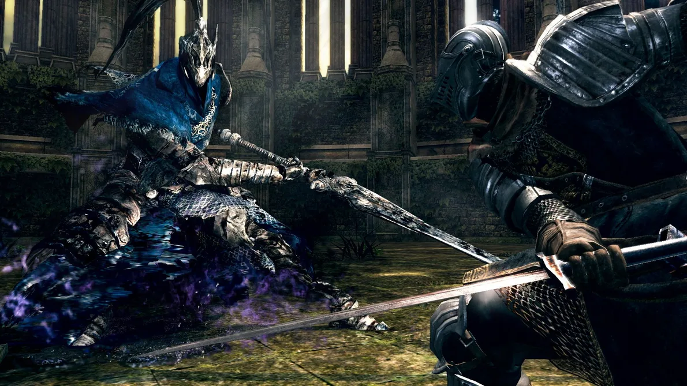

Notícias
A BANDAI NAMCO Entertainment Europe tem o prazer de anunciar o lançamento da versão Nintendo Switch de DARK SOULS: REMASTERED.
No mesmo dia,a figura amiibo baseada no famoso Solaire of Astora também estará disponível. Isso permitirá que o verdadeiro Guerreiro da Luz do Sol prove sua fé usando o gesto “Louvado seja o Sol” desde o início da aventura (o gesto também pode ser obtido através do jogo normal).
O jogo e o amiibo Solaire estarão disponíveis em 19 de outubro de 2018.
Saiba mais no site oficial .
Com exploração tensa e inimigos temíveis, o mundo distorcido de DARK SOULS: REMASTERED está cheio de provações, batalhas extremas, diversos armamentos e magia. Os jogadores podem personalizar seu personagem para se adequar exatamente à jogabilidade desejada, seja um guerreiro impiedoso de armadura pesada ou um feiticeiro frágil, mas poderoso. A versão para Nintendo Switch de DARK SOULS: REMASTERED permitirá que os jogadores enfrentem esses desafios de frente em qualquer lugar! Os jogadores do Switch poderão explorar Lordran antes do lançamento com o teste de rede online. Mais informações estarão disponíveis em breve.
Recurso da versão do Nintendo Switch:
Resolução: Modo TV: 1080p / Modo portátil: 720p
Taxa de quadros: 30fps
Jogadores compatíveis online: 1～6
Sistema online: Servidor de jogo específico
DLC: Incluído